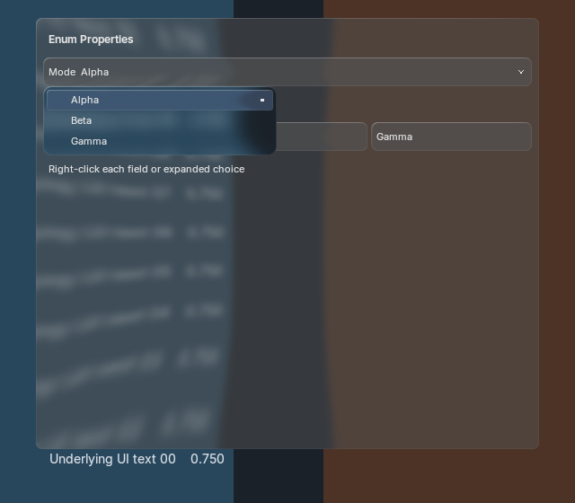

Menus with 12 or more options now show a pinned search field. Type to filter labels and group names, use arrows and Enter to select, or clear with ×. Escape/right-click clears a query first, then returns or dismisses. The original option owns the action; filtering never writes a property.
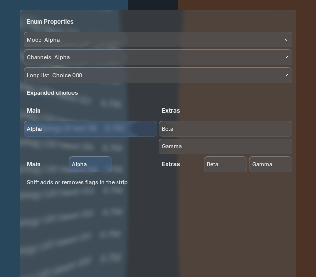
100 motion frames per scale on Blender 5.1.2 and 5.2.2 match with native text batching enabled/disabled (600 frames total). Images display at a constant logical width; click for raw pixels. Large menus paint only visible rows and keep ordinary field typography.
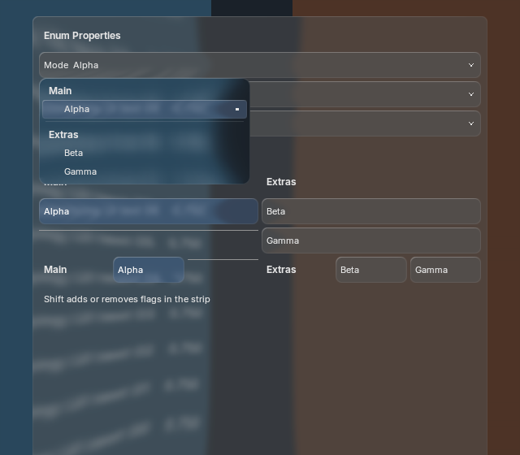
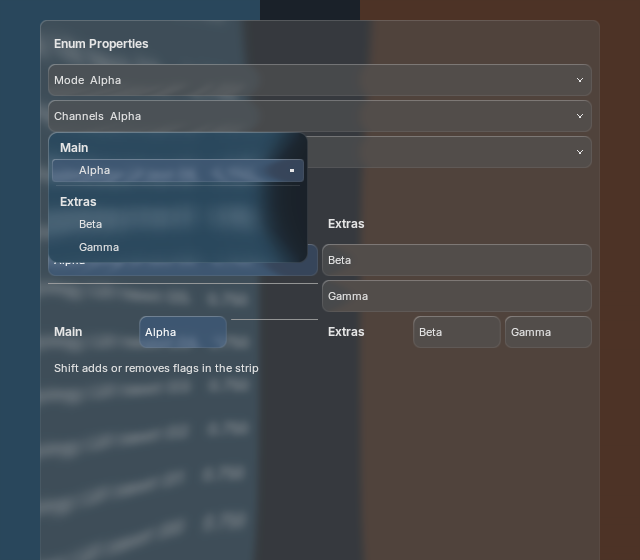
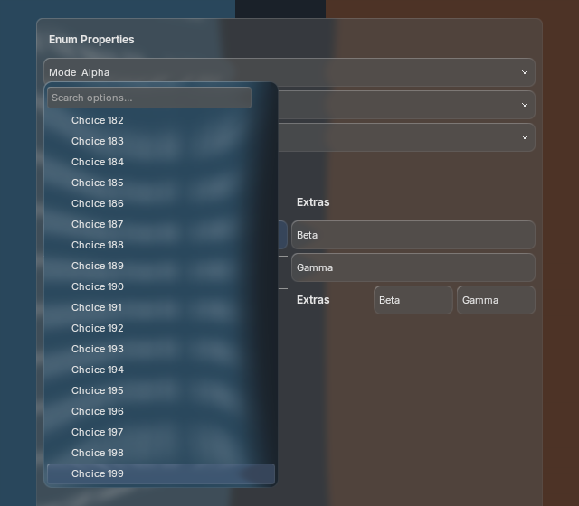
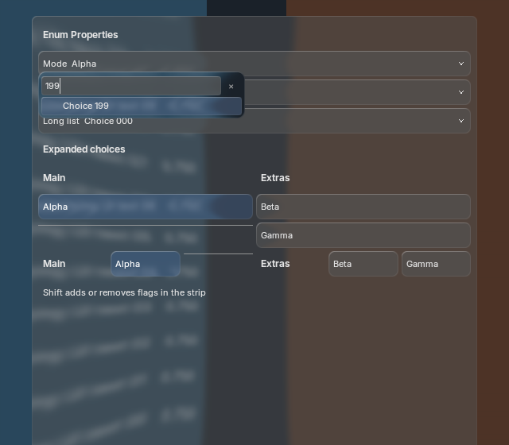
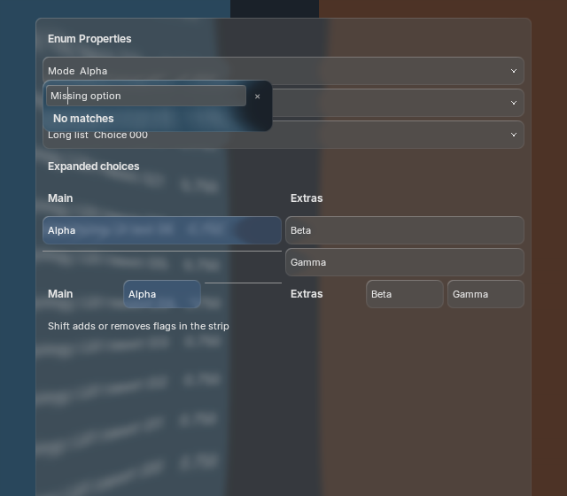
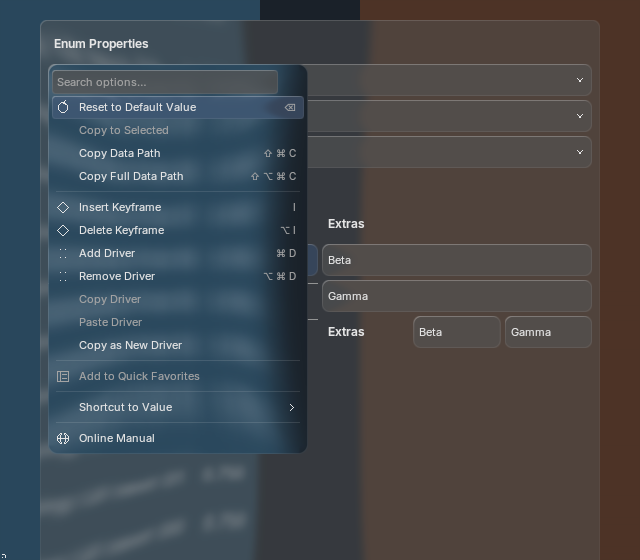
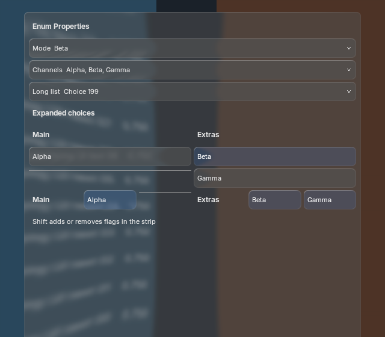
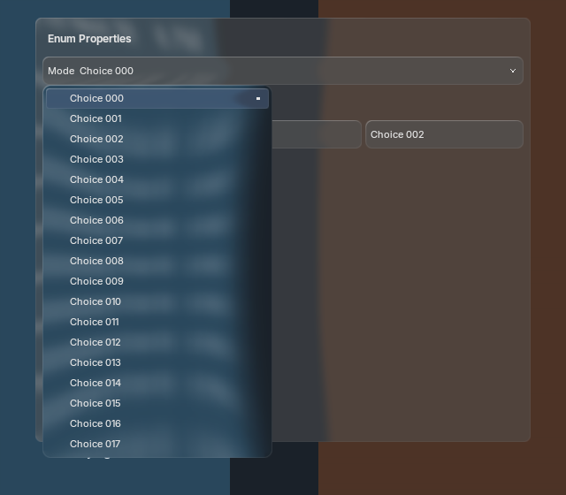
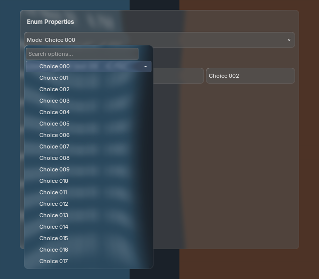
Equivalent 200-choice workload: before / after CPU paint timings and retained resource counts. The added search field has a rendering cost; no extra backdrop production or blur is introduced.

Same three-choice scalar and three expanded buttons, 20 warmups and 100 CPU submission samples per workload. Pixel comparison and before/after timing records are included. Resting and open ungrouped benchmark pixels retain their existing appearance. These are process-level regression checks, not GPU latency or source-equivalent BVT speed claims.
Real window input verifies typing to find the 200th choice, Enter selection, no-match clearing, current-choice reveal, exact property right-click routing, cancellation and quiescent teardown. One shared backdrop production, one blur, five offscreens and retained font/shader/batch identities stay stable through the capture sequence. No new generated artwork or visual approval is claimed.
Parity remains partial. Search uses case-insensitive matching of all query words, not fuzzy ranking. IME composition, context-dependent menu persistence, custom icon artwork, specialized tab highlights, full focus traversal and broader theme/platform validation remain open. Public-RNA fallback exposes choices but omits headings/separators; grouping is qualified only on the admitted tested builds. Blender 4.2 fallback is retained but not executed. Tyler owns visual QA.
5.2 captures and timings · 5.1 captures and timings · RNA cases · Real window input · Search behavior and configuration